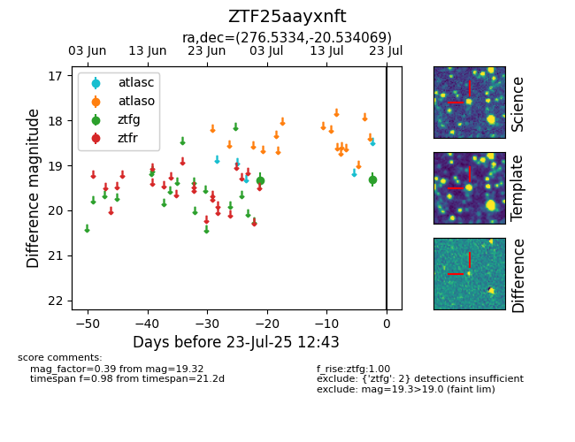

Target ZTF25aayxnft at 2025-07-23 12:43, see:
FINK: fink-portal.org/ZTF25aayxnft
Lasair: lasair-ztf.lsst.ac.uk/objects/ZTF25aayxnft
ALeRCE: alerce.online/object/ZTF25aayxnft
alt names
ZTF25aayxnft (ztf,fink)
coordinates:
equatorial (ra, dec) = (276.5334,-20.53407)
galactic (l, b) = (11.8278,-3.90533)
photometry
last ztfg=19.32
2 ztfg detections
